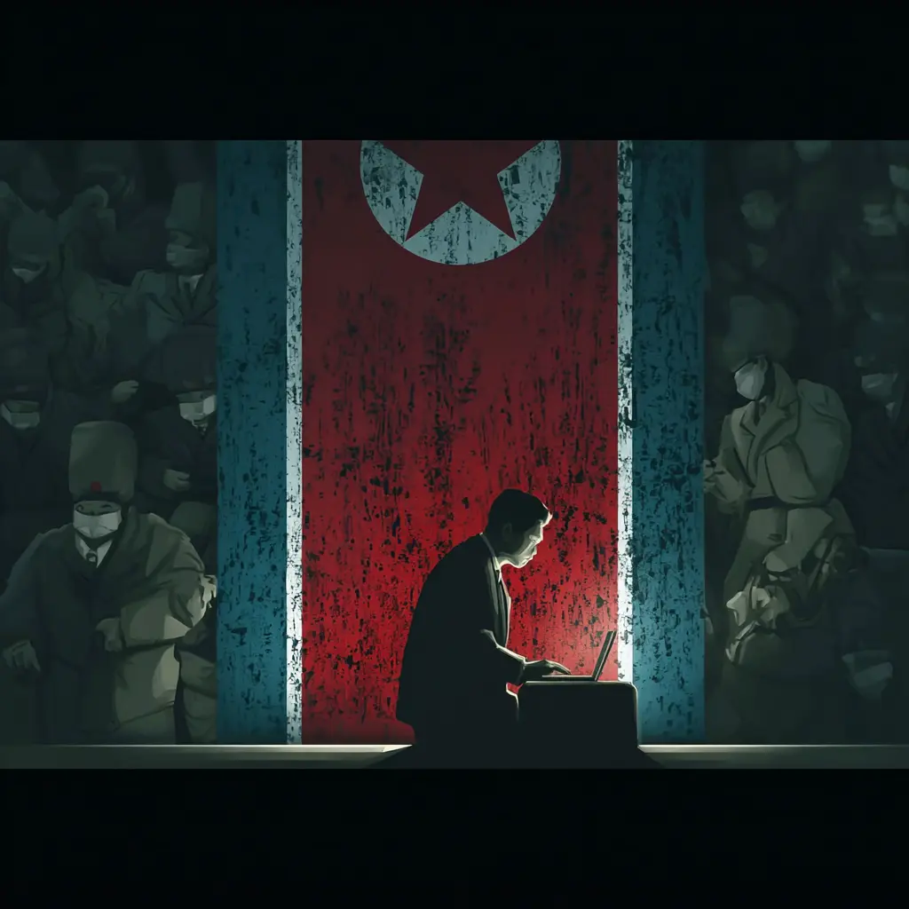

01 Lazarus
APT-38
El grupo Lazarus es un actor vinculado al apartado militar de Corea del Norte. Tienen objetivos políticos y económicos para apoyar al régimen de los Kim, así como su programa nuclear. En los últimos años se han centrado en el espacio de las criptomonedas, debido al anonimato y la dificultad de rastrear los activos robados.
Región: Corea del Norte
Primera Aparición: 2007